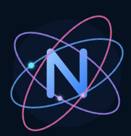

Projets
Ce que je construis, à l'école et sur mon temps libre.
Par état
L'étiquette à droite indique si c'est un projet perso ou d'école
En ligne
-

N.O.A.H.
PersoNeural Operational Assistant Hub : mon assistant conversationnel, pensé autour du respect de la vie privée.
Il réunit un chat, des agents spécialisés (études, développement, création, business) et une mémoire qui retient le contexte de l'utilisateur.Mon rôle : l'idée de départ est de moi.
Le cahier des charges a été rédigé avec ChatGPT, puis je l'ai adapté.
Le code est écrit par l'IA : je donne les idées, je teste et je signale ce qu'il faut corriger.
En cours
-

Projet de certification
ÉcoleLe dossier qui clôture mon bachelor, sur un cas fictif : N.O.A.H.
devenue une start-up de 25 personnes qui s'installe dans 150 m² de bureaux à Paris.
Je conçois son infrastructure : réseau découpé en 6 VLAN, architecture Zero Trust, MFA pour tous les comptes, interconnexion avec le cloud, disponibilité visée de 99,9 %.Quatre volets : concevoir l'infrastructure, la déployer et la sécuriser, la superviser, gérer les incidents et la maintenance.
Soutenance de 45 minutes devant un jury.En savoir plus
Projet en cours.
Les sections 1 et 2 du dossier technique sont rédigées ; le reste du bloc présente les attendus du projet.Le cas d'étude
N.O.A.H.
est ici une SAS qui édite une plateforme d'IA conversationnelle centrée sur la vie privée.
Elle compte 25 collaborateurs répartis en 6 pôles, s'installe dans 150 m² à Paris, et 30 % de l'équipe est en télétravail partiel.
Point de départ : une box grand public, aucune segmentation, pas de MFA, pas d'annuaire centralisé et des fichiers partagés sur des clouds personnels.
Objectif de croissance : 50 personnes d'ici 18 mois, et peut-être un deuxième site en province.Ma mission, dans le rôle d'un cabinet de conseil : concevoir, dimensionner et documenter l'infrastructure IT des nouveaux bureaux, en Security by Design, conforme au RGPD, à NIS 2 et au RGAA, et hybride entre local et cloud.
Les objectifs chiffrés
- 99,9 %
- disponibilité, soit moins de 8 h 45 de coupure par an
- < 1 h
- RPO (perte de données max.)
- < 4 h
- RTO (remise en service)
- 6 VLAN
- réseaux isolés
- 100 %
- des comptes en MFA
- AES-256
- au repos, TLS 1.3 en transit
- RGAA AA
- pour les outils internes
- −30 %
- d'empreinte carbone
Ce que j'ai déjà rédigé
- Recueil des besoins en 4 étapes : ateliers métier, analyse technique, atelier transverse, validation avec la direction.
- Besoins des 6 pôles détaillés et priorisés (Développement, Commercial, RH, Direction, Sécurité, IT interne), chacun relié à une compétence du référentiel.
- 19 exigences d'infrastructure consolidées dans une matrice.
- Classification des données en 5 niveaux et cartographie des 9 flux critiques.
- Budget et priorisation MoSCoW pour arbitrer les choix.
La classification des données
Niveau Exemples Protection C1 Publique site web, documentation HTTPS C2 Interne e-mails internes, tickets accès authentifié, chiffrement en transit C3 Confidentielle code source, modèles d'IA, logs de sécurité chiffrement au repos, RBAC, journalisation C4 Critique données des utilisateurs, paie, contrats AES-256, MFA, RBAC, audit immuable C5 Réglementée jetons de paiement Stripe et PayPal PCI-DSS, délégué au prestataire Le budget et les priorités
- 40 – 60 k€
- investissement initial (CAPEX)
- 25 – 35 k€
- fonctionnement par an (OPEX)
- 15 %
- des postes en matériel reconditionné
- Must indispensable70 %pare-feu NGFW, VLAN, MFA, chiffrement, sauvegardes, Active Directory
- Should important20 %SD-WAN / ZTNA, SIEM, EDR/XDR, conformité RGAA
- Could appréciable8 %matériel reconditionné, FinOps avancé, documentation anglaise complète
- Won't plus tard2 %multi-sites complet, maintenance prédictive par IA
Le découpage réseau
- VLAN 10 Direction
- VLAN 20 Développement
- VLAN 30 Commercial et marketing
- VLAN 40 RH et administration
- VLAN 50 Admin et sécurité
- VLAN 60 Invités, accès Internet seul
Les 4 volets à réaliser
1 Concevoir en cours
Analyser les besoins, cartographier l'existant, auditer les vulnérabilités, puis concevoir une architecture Security by Design, hybride entre local et cloud, avec son coût global (TCO / ROI).
2 Déployer et sécuriser
Installer le réseau (switches, routeurs, pare-feu NGFW, Wi-Fi), les serveurs virtualisés, l'annuaire et les bases de données, durcir les postes et automatiser le déploiement.
3 Superviser
Analyser les menaces, configurer les alertes, écrire les procédures de réponse aux incidents, gérer les droits d'accès et suivre des indicateurs dans un tableau de bord.
4 Maintenir
Planifier la maintenance, gérer les correctifs, suivre les demandes internes et externes dans deux outils de tickets séparés, tester la sauvegarde et la reprise (PCA / PRA) et mener les audits.
La stack de l'entreprise
Les exigences transverses
- Conformité : RGPD, NIS 2, ISO 27001 et 27018, et le Cloud Act, puisque l'API Gemini est américaine.
- Accessibilité : outils internes au niveau RGAA AA, lecteurs d'écran (NVDA, JAWS), navigation au clavier.
- Green IT : virtualisation, matériel reconditionné, extinction automatique, FinOps.
- Anglais : résumé, procédures et veille CERT en anglais.
Livrables et évaluation
- Un dossier technique de 30 à 35 pages, un support de présentation et un dossier professionnel.
- Une soutenance de 45 minutes : 30 minutes de présentation, 15 minutes d'entretien technique.
- 36 compétences en 4 blocs : chaque bloc doit être validé séparément.
- Rendu le 23 août 2027.
-

Un jeu pour Steam
PersoUn jeu où le joueur crée son propre lac, destiné à être publié sur Steam.
Mon rôle : je voulais créer un jeu pour Steam.
J'ai demandé des idées à Claude et je m'en suis inspiré pour le concept.
Le code est écrit par l'IA : je donne les idées, je teste et je signale ce qu'il faut corriger. -

Application d'animés et de mangas
PersoUne application pour gérer ses animés et ses mangas.
Je la développe avec Flutter et le langage Dart.Mon rôle : l'idée est de moi.
Le code est écrit par l'IA : je donne les idées, je teste et je signale ce qu'il faut corriger.
Terminés
-

Sites web
Perso et stagePlusieurs sites créés, en HTML/CSS pour mes projets personnels et avec WordPress en stage.
-
Serveurs Discord
PersoJ'ai créé et configuré plusieurs serveurs.
Un serveur pour accompagner mon serveur Minecraft.
Un serveur communautaire.
Un serveur d'aide aux devoirs, qui s'est transformé en serveur d'entraide en général.
Un serveur pour mon application d'animés et de mangas.
Archivés ou abandonnés
-
Serveur Minecraft
PersoUn serveur moddé en version 1.12.2.
J'ai créé un mod pour le serveur et des plugins personnalisés.
J'ai aussi repris un launcher existant, que j'ai modifié.
Je l'ai arrêté faute de joueurs actifs.
Lexique
Les termes techniques des projets
- Active Directory
- Annuaire de Microsoft qui centralise les comptes des utilisateurs et leurs droits d'accès.
- AES-256Advanced Encryption Standard, 256 bits
- Algorithme de chiffrement qui utilise des clés de 256 bits.
C'est le standard pour protéger des données stockées. - APIApplication Programming Interface
- Interface qui permet à deux logiciels de communiquer.
N.O.A.H. passe par l'API Gemini pour interroger le modèle d'IA de Google. - Bastion
- Serveur sécurisé par lequel passent obligatoirement tous les accès d'administration.
Il permet de les contrôler et de les tracer. - CAPEXCapital Expenditure
- Dépenses d'investissement.
C'est l'achat du matériel : serveurs, pare-feu, postes. - CERT-FRComputer Emergency Response Team France
- Centre gouvernemental rattaché à l'ANSSI (Agence nationale de la sécurité des systèmes d'information).
Il publie des alertes sur les failles et les attaques en cours. - Cloud ActClarifying Lawful Overseas Use of Data Act
- Loi américaine qui permet aux autorités des États-Unis d'accéder aux données détenues par des entreprises américaines.
Cela vaut même si ces données sont stockées hors des États-Unis. - EDR / XDREndpoint Detection and Response / Extended Detection and Response
- Outils qui détectent les menaces et y réagissent.
L'EDR surveille les postes et les serveurs, le XDR l'ensemble du système. - FinOpsFinancial Operations
- Démarche de suivi et de maîtrise des coûts du cloud.
- GLPIGestionnaire Libre de Parc Informatique
- Logiciel libre de gestion des tickets de support et de l'inventaire du parc informatique.
- Green ITInformatique verte
- Démarche qui vise à réduire l'impact environnemental du numérique.
- HTTPSHyperText Transfer Protocol Secure
- Version sécurisée du protocole utilisé pour afficher les pages web.
Les échanges y sont chiffrés avec TLS. - IDS / IPSIntrusion Detection System / Intrusion Prevention System
- Systèmes qui surveillent le réseau.
L'IDS détecte les tentatives d'intrusion, l'IPS les bloque. - ISO 27001International Organization for Standardization, norme 27001
- Norme internationale qui définit comment organiser et piloter la sécurité de l'information dans une entreprise.
- MFAMulti-Factor Authentication
- Authentification à plusieurs facteurs.
En plus du mot de passe, il faut un code ou un appareil.
Un mot de passe volé ne suffit donc plus. - MoSCoWMust have, Should have, Could have, Won't have
- Méthode de priorisation des besoins.
Must : indispensable.
Should : important.
Could : appréciable.
Won't : pas pour cette fois. - NGFWNext-Generation Firewall
- Pare-feu de nouvelle génération.
Il filtre le trafic et inspecte aussi son contenu pour repérer les applications et les menaces. - NIS 2Network and Information Security, version 2
- Directive européenne qui impose des mesures de cybersécurité aux entreprises de nombreux secteurs.
Elle oblige aussi à déclarer les incidents. - OPEXOperational Expenditure
- Dépenses de fonctionnement qui reviennent chaque année : licences, maintenance, abonnements cloud, électricité.
- PCA / PRAPlan de Continuité d'Activité / Plan de Reprise d'Activité
- Le PCA permet de continuer à fonctionner pendant une crise.
Le PRA permet de redémarrer après un sinistre. - PCI-DSSPayment Card Industry Data Security Standard
- Norme de sécurité obligatoire pour traiter des données de cartes bancaires.
- Proxmox
- Plateforme libre de virtualisation.
Elle fait tourner plusieurs machines virtuelles sur un même serveur. - RBACRole-Based Access Control
- Gestion des droits selon le rôle.
Chaque personne n'accède qu'à ce dont son poste a besoin. - RGAARéférentiel Général d'Amélioration de l'Accessibilité
- Référentiel français d'accessibilité numérique.
Il vise à rendre les outils utilisables par les personnes en situation de handicap. - RGPDRèglement Général sur la Protection des Données
- Règlement européen qui encadre la collecte et la protection des données personnelles.
- RPORecovery Point Objective
- Quantité maximale de données qu'on accepte de perdre lors d'un incident.
Elle s'exprime en temps écoulé depuis la dernière sauvegarde. - RTORecovery Time Objective
- Durée maximale acceptée pour remettre un service en marche après un incident.
- SASSociété par Actions Simplifiée
- Forme juridique d'entreprise française, souple et courante chez les start-up.
- SD-WANSoftware-Defined Wide Area Network
- Technologie qui relie les sites et les télétravailleurs au réseau de l'entreprise.
Elle est pilotée par logiciel. - Security by DesignSécurité dès la conception
- Principe qui consiste à intégrer la sécurité dès la conception.
On ne l'ajoute pas après coup. - SIEMSecurity Information and Event Management
- Outil qui rassemble les journaux de tous les équipements.
Il les analyse pour repérer les incidents de sécurité. - SOARSecurity Orchestration, Automation and Response
- Outil qui automatise la réponse aux incidents.
Il s'appuie sur des scénarios écrits à l'avance, appelés playbooks. - SSOSingle Sign-On
- Authentification unique.
On se connecte une fois pour accéder à toutes les applications. - TCO / ROITotal Cost of Ownership / Return On Investment
- Le TCO est le coût total de possession : achat, maintenance et énergie sur plusieurs années.
Le ROI est le retour sur investissement. - TLS 1.3Transport Layer Security, version 1.3
- Dernière version du protocole qui chiffre les échanges sur le réseau.
C'est lui qui protège les sites en HTTPS. - VLANVirtual Local Area Network
- Réseau local virtuel.
Il découpe un réseau physique en plusieurs réseaux isolés les uns des autres. - VPNVirtual Private Network
- Tunnel chiffré qui relie un appareil distant au réseau de l'entreprise.
- WPA3-EnterpriseWi-Fi Protected Access 3, version Entreprise
- Sécurité Wi-Fi où chaque collaborateur se connecte avec ses propres identifiants.
- Zero TrustConfiance zéro
- Modèle de sécurité où aucun accès n'est fiable par défaut.
Chaque connexion est vérifiée, même depuis l'intérieur du réseau. - ZTNAZero Trust Network Access
- Accès distant fondé sur le Zero Trust.
Il remplace souvent un VPN classique.